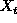
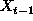
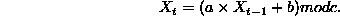
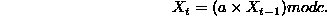

Most random number generators (RNG) aren't. They are completely deterministic.
They produce a stream of numbers, each new number being calculated deterministically from it's predecessor. We hope that this deterministic stream provides similar characteristics to a truly random stream.
Call the new number  , then it is produced from  using the relationship:

For example, if a = 1, b = 3 and c = 7 with  we get the
stream: {3,6,2,5,1,4,0,3,6,2, ...}.
Notice that it starts repeating (the period) after 7 values. The maximal period for one of these generators will be c - I lucked out, there is no reason why the period has to equal c.
we get the
stream: {3,6,2,5,1,4,0,3,6,2, ...}.
Notice that it starts repeating (the period) after 7 values. The maximal period for one of these generators will be c - I lucked out, there is no reason why the period has to equal c.
Here's what you get if you do a man drand48 on our system:
DESCRIPTION
This family of functions generates pseudo-random numbers
using the well-known linear congruential algorithm and 48-
bit integer arithmetic.
By default drand48 uses c = 2**48, a = 5DEECE66D base 16, and
b = B base 16.
There is a well known and classic LC-RNG that's implemented in ANSI C. It uses a = 1103515245, b = 12345 and c = 32768. There's obviously something not too good about this! But really, when asking the question of whether or not a RNG is any good, you need to know the context in which the thing will be used. For the Mastermind game, this would be fine. Used as a method for making pseudo random keys for encryption algorithms would be another matter.
These are a specialization of the LC-RNG in which b is set equal to zero, so we have

These are faster and can do just as well as the linear generator. Check out the man page for rand
rand() uses a multiplicative congruential random-number gen-
erator with period 2^32 that returns successive pseudo-
random numbers in the range from 0 to (2^15)-1.
These deterministic methods generate a stream of pseudo random bits, (0/1). Bits can be combined to produce integers of course.
Start with a seed , say 7, write it in base 2, {1,1,1,1}.
Shift everything to the right by 1 bit {?, 1,1,1}.
Define a rule for filling in the question mark - say XOR (exclusive or),
the second and third bits, to get {0,1,1,1}.
Repeat.
One method of getting at really random integers is to use the time between key strokes on the keyboard. Another is to use a chaotic source within the computer itself, airflow, heat etc can serve as bases for these.
Perl has a module called Math-TrulyRandom to implement the key stroke timing approach - it would be useful for encryption programs for example.
Reference: Jon Orwant, (1996) Randomness. The Perl Journal, 1.(4) p.10-12.